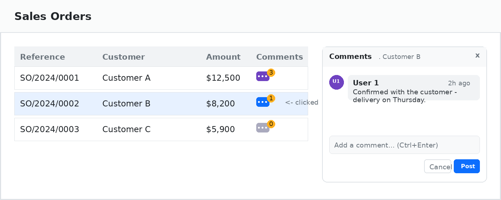

|
📋
Generic Mixin
Works on any model — inherit one mixin and you're done.
|
💬
Floating Popup
Smart-positioned panel that auto-avoids screen edges.
|
⚡
Post Inline
Ctrl+Enter posts a comment — no form view needed.
|
🔢
Live Badge
Comment count updates immediately after posting.
|
|
1
Inherit the mixin
Add
tree.comments.mixin to any model's _inherit list. |
2
Add the field
Drop
comment_count with widget="comments_button" into the list view. |
3
Depend on it
Add
tree_comments_widget to your module's depends. |
4
Upgrade & go
Upgrade the module — the Comments column appears instantly.
|

The mixin already bundles mail.thread, so this works even on models with no chatter today — for example sale.order.line, which has no mail.thread of its own in Odoo core.
from odoo import models, fields
class SaleOrderLine(models.Model):
_name = 'sale.order.line'
_inherit = ['sale.order.line', 'tree.comments.mixin']
# tree.comments.mixin brings mail.thread with it — no extra step
Place comment_count with widget="comments_button" inside the <list> tag.
<record id="view_order_line_tree" model="ir.ui.view">
<field name="model">sale.order.line</field>
<field name="arch" type="xml">
<list>
<field name="product_id"/>
<field name="price_unit"/>
<field name="comment_count"
widget="comments_button"
string="Comments"
optional="show"/>
</list>
</field>
</record>
{
'name': 'My Module',
'depends': ['sale', 'tree_comments_widget'],
'data': ['views/sale_order_line_views.xml'],
}
# from your Odoo root python odoo-bin -d <your_db> -u my_module --stop-after-init
| Item | Type | Description |
comment_count |
Integer (computed) | Number of chatter messages of type comment or email for the record. Not stored in DB. |
_compute_comment_count |
Method | Counts mail.message records matching res_id + model. |
mail.thread.message_post — fully compatible with existing notifications and followers.| Compatible with Odoo 19.0 · Requires the Discuss (mail) app | Questions before you buy? Contact mrdudedeg@gmail.com. |